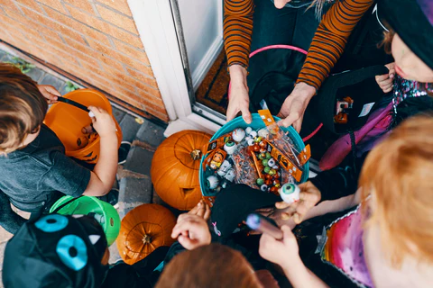

Gastronomia
La gastronomía de Halloween destaca por sus platos y dulces temáticos, como galletas decoradas, cupcakes, caramelos, pasteles en forma de calabaza y bebidas coloridas. Se preparan recetas creativas que simulan monstruos, fantasmas y otros símbolos típicos de la festividad, haciendo de la comida parte esencial de la celebración.